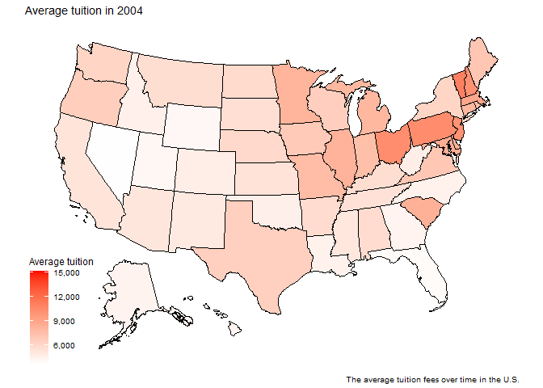
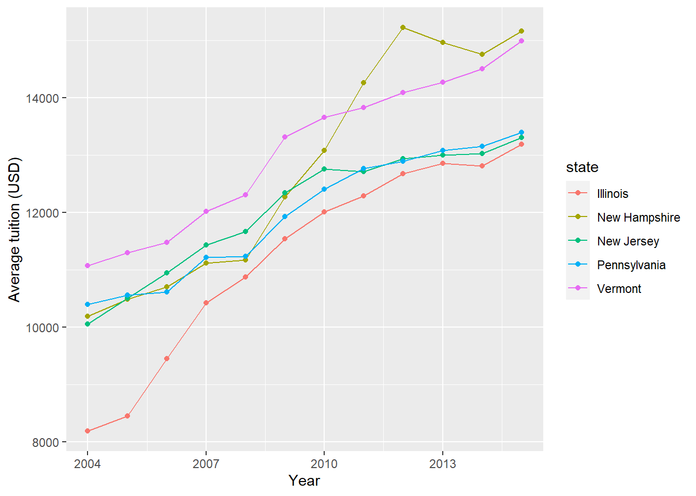

Show library use in this analysis
library(tidyverse)
library(readxl)
library(ggplot2)
library(kableExtra)
library(ggthemes)
library(gganimate)
library(transformr)
library(gifski)
library(usmap)library(tidyverse)
library(readxl)
library(ggplot2)
library(kableExtra)
library(ggthemes)
library(gganimate)
library(transformr)
library(gifski)
library(usmap)According to Ripley (2018), the cost of higher education in the U.S. is higher than in other countries. It is always the case that the tuition fee is high, so why does this happen?
In this analysis, we will go through the average tuition fees for each state in the U.S. over time and how it differs for each state. We will try to find out why some states may have higher tuition costs than others.
This data set contains information about the average tuition fees in the U.S. This was obtained from github by Mock (2022), where the link to the dataset is here.
State: This contains the 50 states in the United states of America
Year: The average tuition fees from 2004 to 2015 (12 columns)
tuition <- read_excel(here::here("data/us_avg_tuition.xlsx"))
tuitionc <- tuition %>%
pivot_longer(-State,
names_to = "year",
values_to = "avg_tuition") %>%
mutate(avg_tuition = round(avg_tuition, 2),
year = as.numeric(str_remove(year, "\\-(\\d+)")),
abb = State) %>%
relocate(abb, .after = State) %>%
rename(state = State)
tuitionc$abb <- state.abb[match(tuitionc$abb, state.name)]plot <- plot_usmap(data = tuitionc, values = "avg_tuition") +
scale_fill_continuous(low = "white", high = "red", name = "Average tuition", label = scales::comma) +
labs(title = "Average tuition in {as.integer(frame_time)}",
caption = "The average tuition fees over time in the U.S.") +
transition_time(year)
num_years <- max(tuitionc$year) - min(tuitionc$year) + 1
anim <- animate(plot, nframes = num_years, fps = 3, renderer = gifski_renderer())
anim
tuitionc %>%
filter(year == 2010) %>%
select(state, avg_tuition) %>%
arrange(desc(avg_tuition)) %>%
rename("State" = "state",
"Average tuition (USD)" = "avg_tuition") %>%
head(5) %>%
kable("html", align = 'lc', caption = "Top 5 highest average tuition in 2010") %>%
kable_styling(full_width = F, position = "float_left")
tuitionc %>%
filter(year == 2015) %>%
select(state, avg_tuition) %>%
arrange(desc(avg_tuition)) %>%
rename("State" = "state",
"Average tuition (USD)" = "avg_tuition") %>%
head(5) %>%
kable("html", align = 'lc', caption = "Top 5 highest average tuition in 2015") %>%
kable_styling(full_width = F, position = "right")Table 1: Top 5 highest average tuition in U.S.
| State | Average tuition (USD) |
|---|---|
| Vermont | 13655.14 |
| New Hampshire | 13077.14 |
| New Jersey | 12752.02 |
| Pennsylvania | 12403.91 |
| Illinois | 12007.63 |
| State | Average tuition (USD) |
|---|---|
| New Hampshire | 15159.90 |
| Vermont | 14993.03 |
| Pennsylvania | 13394.78 |
| New Jersey | 13303.42 |
| Illinois | 13189.10 |
From the Animate plot, the average tuition fee has been increasing, while the top right of the U.S map has seen to have a high average tuition fee since 2004. If we look at the Table 1, Vermont state had the highest average tuition fee in Table 1 (a), while New Hampshire had the highest in Table 1 (b). The top 5 states are the same for both 2010 and 2015. In the next section, we will take a look at a possible reason for this.
The state that we will be looking at in this section are the following:
In the U.S., most public universities will have state funding which will allow a student in the U.S. to pay the fee at a lower price. However, this is different from state to state. New Hampshire state following the great recession in 2007-2009 has affected the state budget, in turn increasing the tuition fees for the student. It is the same for the university in Vermont. Now we can see that the main issue here is state funding.
tuitionc %>%
filter(state %in% c("Vermont", "New Hampshire", "Pennsylvania", "New Jersey", "Illinois")) %>%
ggplot(aes(x = year, y = avg_tuition, colour = state, group = state)) +
geom_line() +
geom_point() +
labs(x = "Year", y = "Average tuition (USD)")
From the Figure 1, we can see that the average tuition fee has been increasing over time. New Hampshire state has had a skyrocketing fee since the great recession. According to Redfield (2019), in 2012, the state funding for higher education got cut by half. We can see this in the Figure 1, where the average tuition fee is at its highest in 2012.
tuitionc %>%
filter(year == 2015) %>%
select(state, avg_tuition) %>%
arrange(avg_tuition) %>%
rename("State" = "state",
"Average tuition (USD)" = "avg_tuition") %>%
head(5) %>%
kable("html", aligh = 'lc') %>%
kable_styling(full_width =F)Table 2: Top 5 lowest average tuition in the U.S.
| State | Average tuition (USD) |
|---|---|
| Wyoming | 4891.00 |
| Montana | 6351.08 |
| New Mexico | 6354.52 |
| Florida | 6360.16 |
| Utah | 6362.68 |
From the Table 2, the state with the lowest average tuition fees in 2015 is Wyoming. According to the Crotty (2014), the Wyoming state government underwrites the cost of public education to the tune of $15,000 per fully enrolled student per year. While the Granite state college only allocates $2,482 of spending per student per year. We can now see the significance of state funding on the average tuition fees in the U.S.
In the U.S., state funding does influence the average tuition fee, as this fee depends on the federal grant allocated to the education sector. If the state wants to attract more students, it should focus more on the number of federal grants given to the education sector. We can see that the state that has done this well is Wyoming, while New Hampshire state has not done well in this part. There are also other factors like university ranking and the environment around the university that students are looking for when choosing where they want to go. It means that not only that the state has to allocate resource to the education sector, but they also should focus on improving the quality of life in the state. For example, make it safer to live in the state.